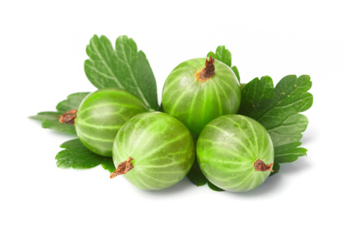

Currants & Gooseberries (Ribes spp.)

Mating & Breeding System: This genus contains many species that are cultivated or collected in the wild, as well as those cultivated on farms. Most species are monoecious, with perfect flowers.
In black currant (R. nigrum) almost all cultivars require insect pollination. The flowers are somewhat self-compatible, but the style and anthers are physically separated in individual flowers. However, all cultivars require insect cross-pollination to set a satisfactory crop. Self-pollinated plants have lower fertility.
Gooseberry (R. uva-crispi, also American hairystem gooseberry R. hirtellum) also show some evidence of self-incompatibility in pollinator exclusion experiments, although the effect in most cultivars is considerably less than in black currant. As in black currant, the structure of the flower (inverted position, anthers laterally distant from stigma) is such that spontaneous selfing appears to be discouraged.
The mating system of red currant (R. rubrum) has been considerably less studied, but shows a similar ability to self and benefit of cross-pollination as the previous two species discussed.
Pollination, Quality & Yield: Pollination has a big impact on yield in these crops, and plants will shed berries with no or few fertilized ovules early in the season. Even so, fertilized ovules will sometimes abort before completing development. This phenomenon is known as fruit drop or running off. It appears to be the result of selective abortion of self-pollinated fruits, probably so plants can concentrate their limited resources on cross-pollinated fruits.
Several studies have found that the presence of insects, particularly bees, significantly improves proportional fruit set, mature fruit produced, and the size and number of seeds in mature Ribes fruit.
Pollination Recommendations: Both honey bees and wild bees are effective pollinators of black currant. Using honey bees for Ribes pollination in Ontario must take weather conditions into account. This is particularly true for gooseberry, which flowers early and in cold and damp weather conditions that may deter honey bees. Available recommendations for honey bees are 4 hives per hectare for red currant, and 2.5-5 colonies per hectare on black currant.
References
Dale, A. & Schooley, K. 1999. Currants and gooseberries. OMAFRA FactSheet 98-095.
Denisov, B. 2003. Self-pollination and self-fertility in eight cultivars of black currant (Ribes nigrum L.). Acta Biologica Cracoviensia Series Botanica 45:111-114.
Eaton, G.W. & Smith, M.V. 1962. Fruit pollination. Ontario Department of Agriculture Publication 172.
Jefferies, C.J., Atwood, J.G., & Williams, R.R. 1982. Crop failure in gooseberry due to poor pollination. Scientia Horticulturae 16:147-153.
Scott-Dupree, C.D., Winston, M., Hergert, G., Jay, S.C., Nelson, D., Gates, J., Termeer, B., & Otis, G. 1995. A guide to managing bees for crop pollination. Canadian Association of Professional Apiculturists, Aylesford NS.
Szklanowska, K. & Dabska, B. 1993. The influence of insect pollinating on fruit setting of three black currant cultivars of (Ribes nigrum L.). Acta Horticulturae 352:223-230
Teaotia, S.S. & Luckwill, L.C. 1956. Fruit drop in black currants: factors affecting "running-off". Report of the Agriculture and Horticulture Research Station, University of Bristol 64:64-74.
Wellington, R., Hatton, R.G., & Amos, J.M. 1921. The "running off" of black currants. Journal of Pomology 2:160-198.
Zakharov, G.A. 1958. Bees in the pollination of black currants and gooseberries. Pchelovodstvo 35:29-33.